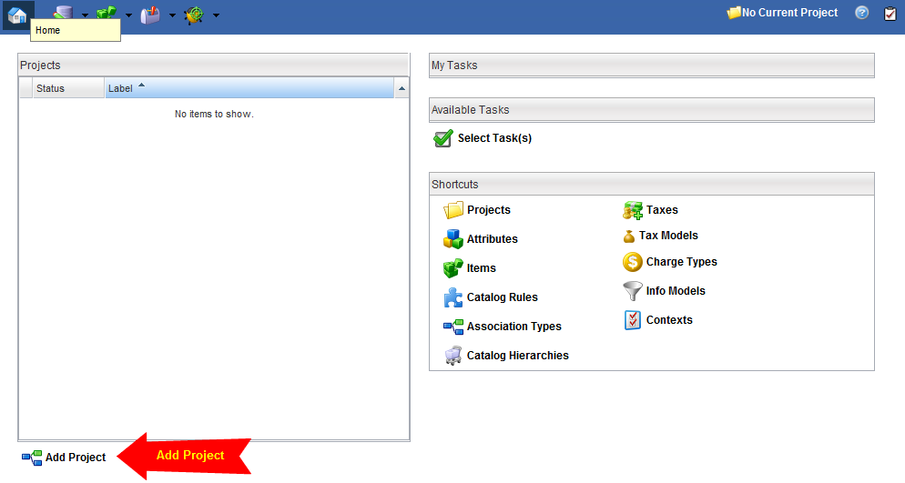
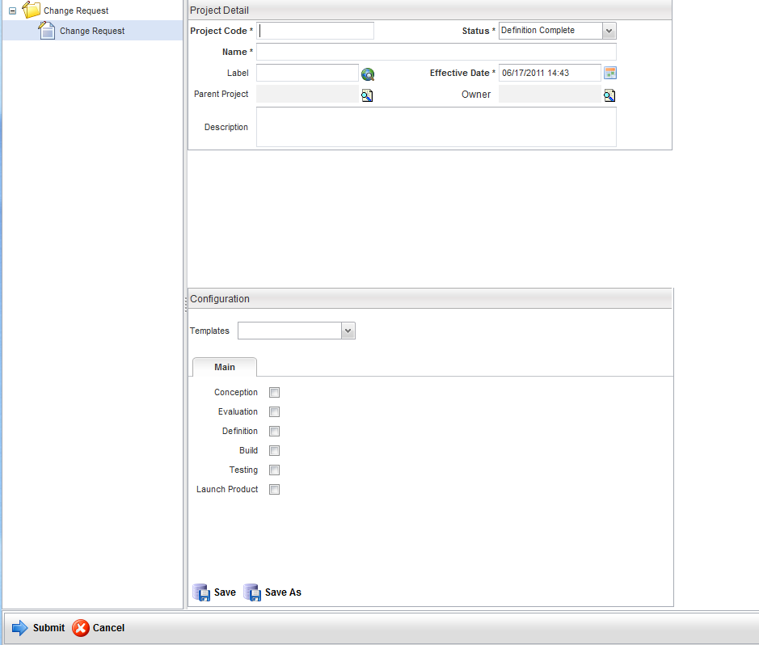
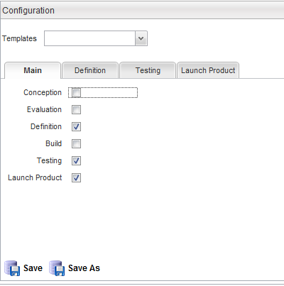
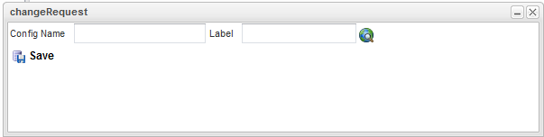
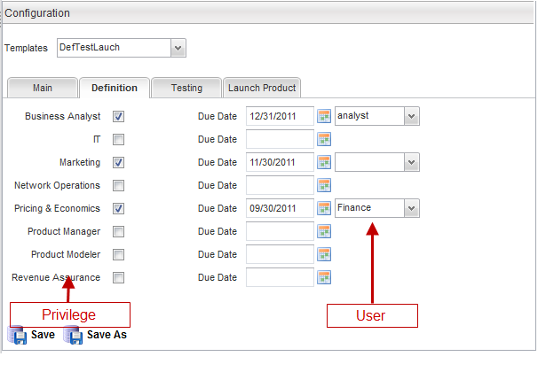
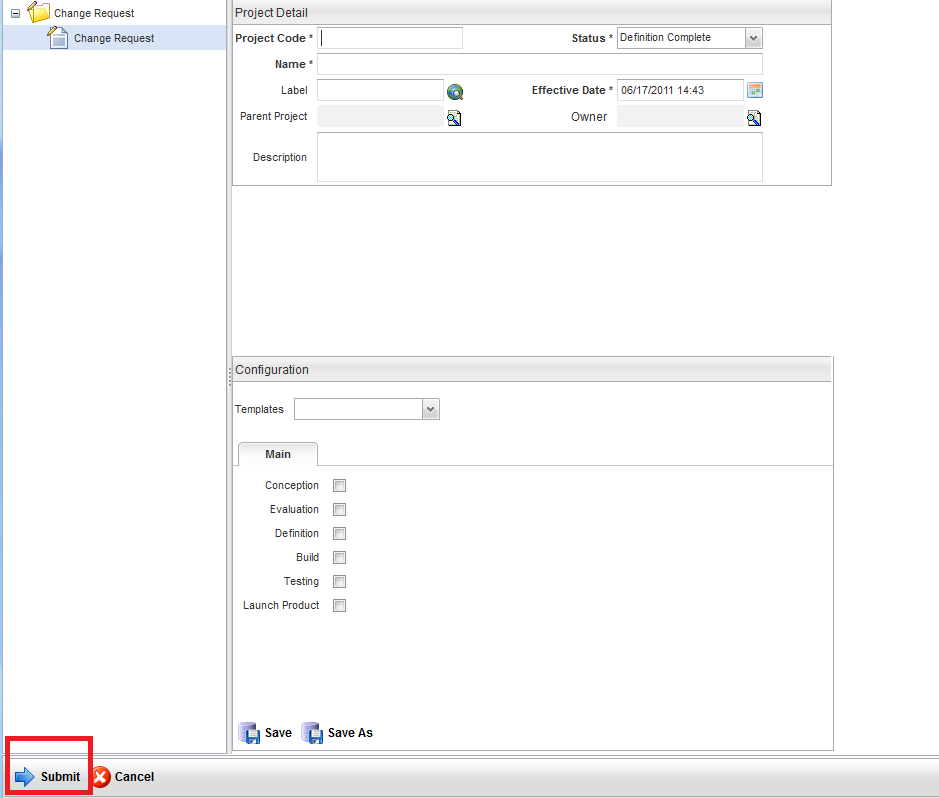
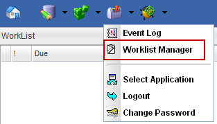
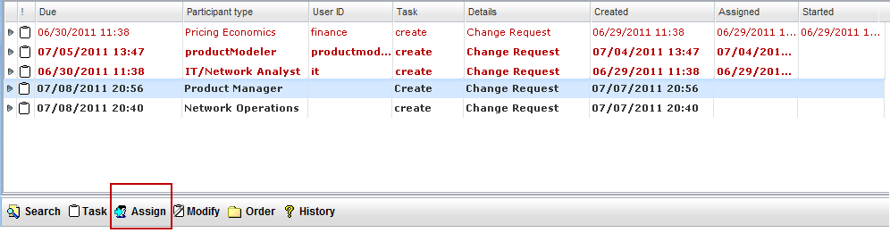
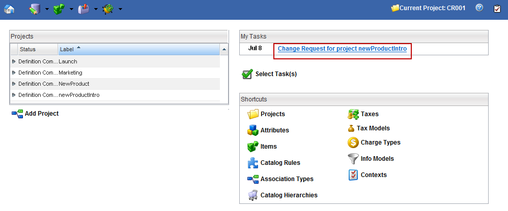
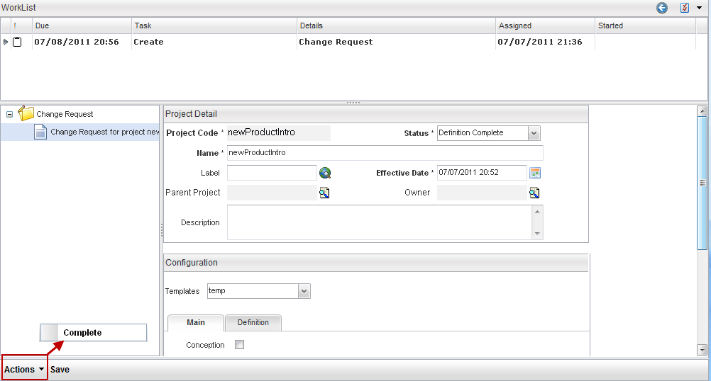

User Process
This section describes the User Interface flow in the PLD process. Below are the steps for configuring the change request project, completing and approving tasks within the workflow.
- Create a Project. Click the
 button from the home page. This button is unique to the change request process. If this button is not visible, then check your privileges (refer to the PLD Setup for more details).
button from the home page. This button is unique to the change request process. If this button is not visible, then check your privileges (refer to the PLD Setup for more details).
 - A Change Request for the newly created Project is initiated. Enter the Project details such as Project Code, Name and Effective Date (refer to the section on Projects for more details).
 - Configure the change request process. Within the Configuration table of the Project page, select the required steps in the change request process (for example, Conception, Evaluation, Definition, Build, Testing and Launch Product). Tabs will appear with each selected change request phase. The example below shows the three available change request tabs representing the three phases selected: Definition, Testing and Launch Product.
 - Click the Save button to save the change request configuration. The system prompts for a Config Name that will save this configuration as a template to be used for another project.
 - Define the approval tasks. Click each change request tab and assign the user that will approve each change request step and the approval due date.
 For each change request step, a user can be selected to approve the change request. The Product Manager can configure which departments are required to approve the stage, the due date that they must approve by and they can specify a particular user to perform the approval. The configuration form above contains the various departments, a due date and a drop down list of users. The drop down list of users that appear are the users that have the associated privilege assigned to them.
In the example above for the Definition stage, the Business Analyst, Marketing and Pricing & Economics departments have been selected to approve the Definition stage. Once the Definition tasks have been completed, an approval task is created for each user selected in this Configuration form. For the Business Analyst approval, the analyst user has been assigned to approve this change request and only this specific user can approve this task. The Marketing department has not specified a user, which means that any user with Marketing Manager privileges can approve the Definition stage. The workflow approval task will appear in each specified user's task list and will appear red when past due (that is, the Due Date entered here is in the past).
- Once the Change Request process has been defined, Submit the Project.
 - Assign a task in the Worklist Manager. Navigate to the Worklist Manager by clicking Tools > Worklist Manager. Within the Worklist Manager, enter appropriate search criteria and click the Search button.
From the example above, the first stage is the Definition stage. Within this stage, the first task is sent to the project manager to create the project plan. Assign a project manager to the task by selecting the task and clicking the Assign button.
The Worklist Users dialog box appears with a list of all users with their associated privileged. Select a user. A task should now appear in that user's task list.
Notes:- The participant types are different for all the create tasks. In this example, this user has all the participant privileges. As a result, all tasks for all privileges appear. Ideally, the privileges are divided among many users. So, users with the businessAnalyst privilege would only see their own create tasks. All create tasks for that user would have the same meaning.
- The screenshot shows the default worklist view. You can create a custom view that is more meaningful for your PLD process.
- The PLD that uses the Orchestration Framework (OF) allows you to define custom processes, participants, and operations. You have the flexibility of giving the operations more meaningful names.
- Click Start > Complete the task. The user assigned to a task will find their task in the My Tasks list in their home box. From the task list, click the task hyperlink.
 The task details are displayed. Click Task > Start or Actions > Complete to complete the task.
 - The Worklist Manager will send the next task to the appropriate user defined in the workflow. The last task in the workflow for each stage is the approval task. The workflow will end at the approval task of the last stage defined in the project configuration.